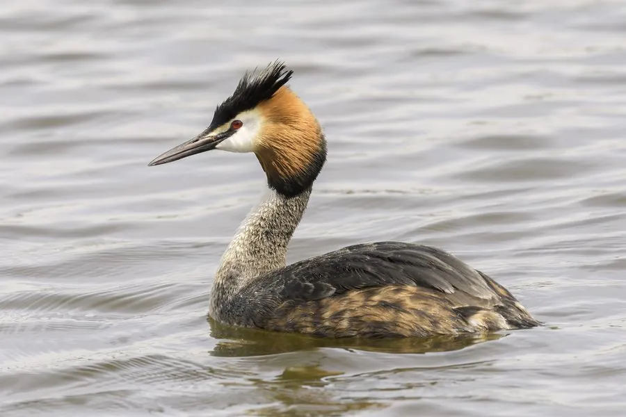

鸟类 · 动物界
凤头鸊鷉 Podiceps cristatus

繁殖期头颈长出栗色饰羽和黑色羽领，如同戴了一顶凤冠，擅长潜水捕鱼，常见于湖泊和水库，是优雅的水鸟。
- 分类
- 门脊索动物门纲鸟纲目䴙䴘目科䴙䴘科属䴙䴘属
- 栖息环境
- 湖泊、水库、沼泽、河流与沿海潟湖，繁殖期在芦苇丛中筑浮巢
- 地理分布
- 欧亚大陆、非洲和澳大利亚，中国大部分地区的湖泊水库均有分布
- 保护级别
- IUCN 无危（LC）；中国“三有”保护动物
物种志
凤头鸊鷉体长 46–51 cm，体重 0.6–1.5 kg。繁殖期它的头顶长出黑色羽冠，脸颊和颈部有栗红色的饰羽，颈部周围有一圈黑色羽领，十分醒目；非繁殖期羽色变得灰白，羽冠缩短。它的喙细长而尖，腿靠后，善潜水。
凤头鸊鷉广泛分布于欧亚大陆、非洲和澳大利亚的湖泊、水库、沼泽和河流，中国大部分地区都有分布。它们以鱼类、水生昆虫和甲壳类为食，常在水面游动后突然潜入水中捕鱼。繁殖期在水边芦苇丛中筑浮巢，每窝产卵 3–4 枚，孵化 27–29 天，雏鸟常被亲鸟驮在背上。凤头鸊鷉目前被列为无危物种，中国将其列入“三有”保护名录。
形态与习性
- 食性鱼类、水生昆虫和甲壳类
- 体长46–51 cm
- 体重0.6–1.5 kg
- 繁殖每窝 3–4 枚卵，孵化 27–29 天
- 特征繁殖期头颈有栗色饰羽和黑色羽领
- 寿命野外约 10–15 年
趣味知识
- 凤头鸊鷉繁殖期头颈的栗色饰羽和黑色羽领，像戴了一顶凤冠。
- 它的巢是浮在水面上的芦苇堆，能随水位升降。
- 雏鸟出壳后常被亲鸟驮在背上，躲进羽毛里取暖。